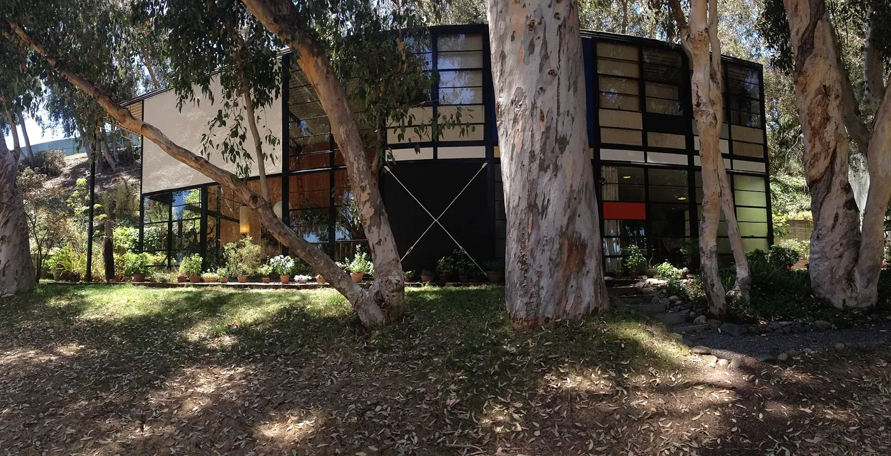
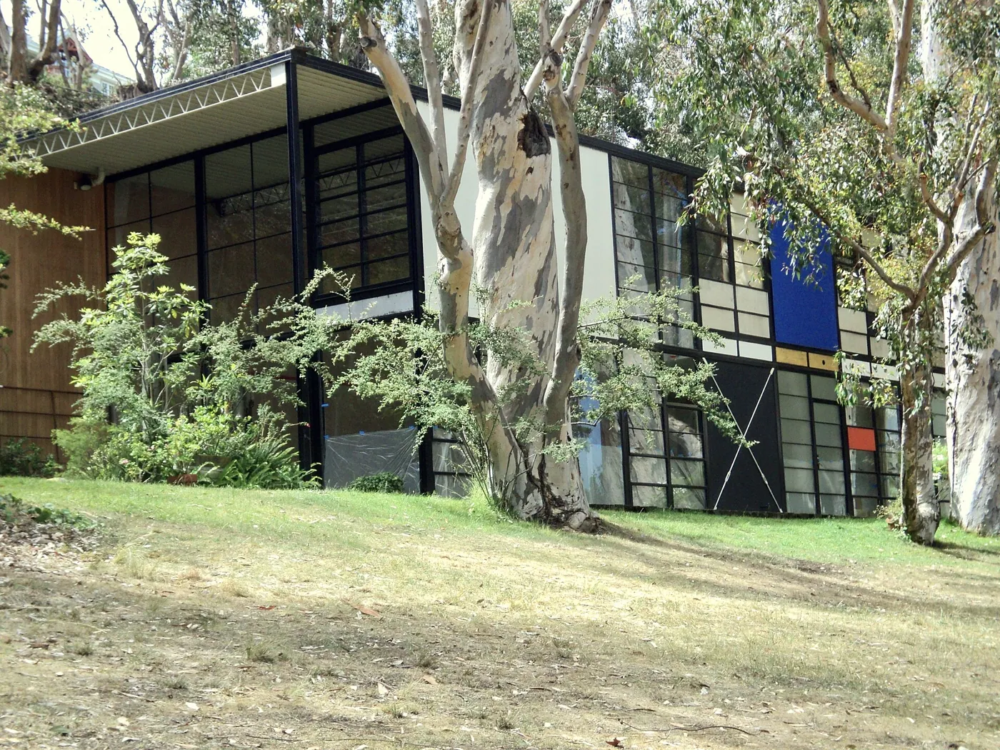
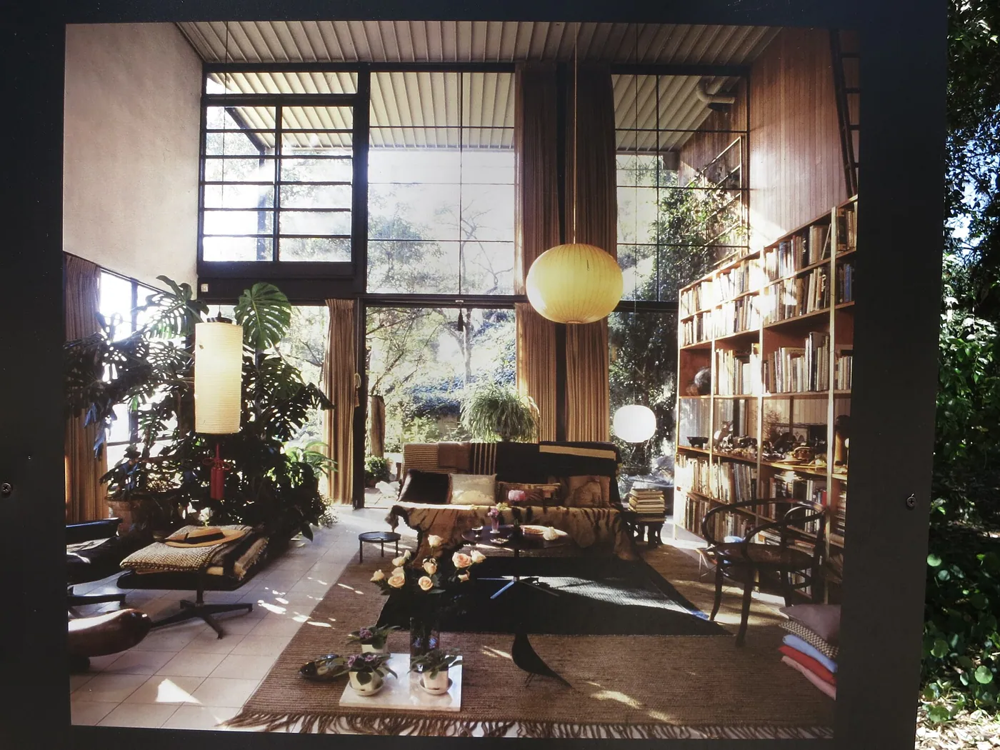
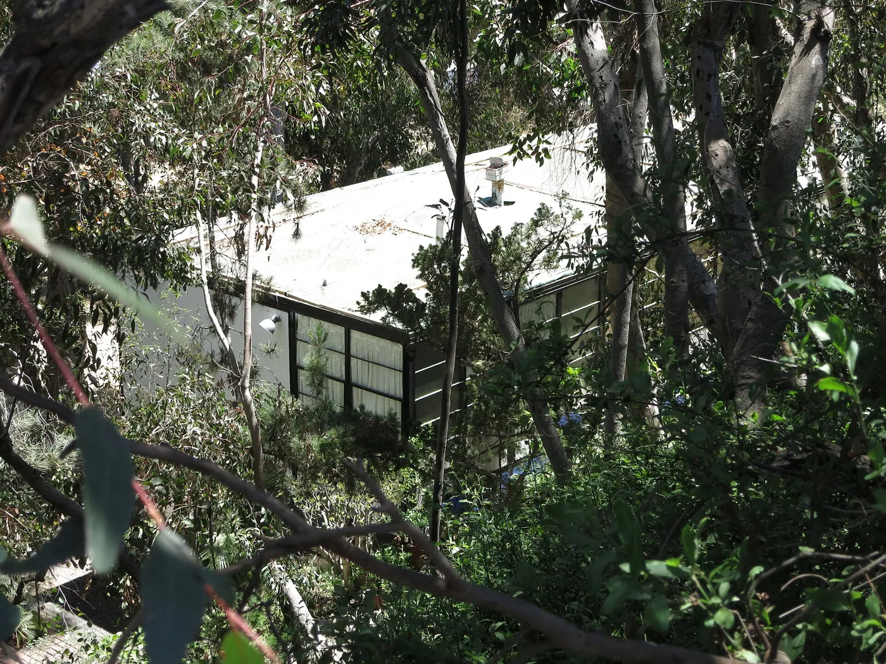
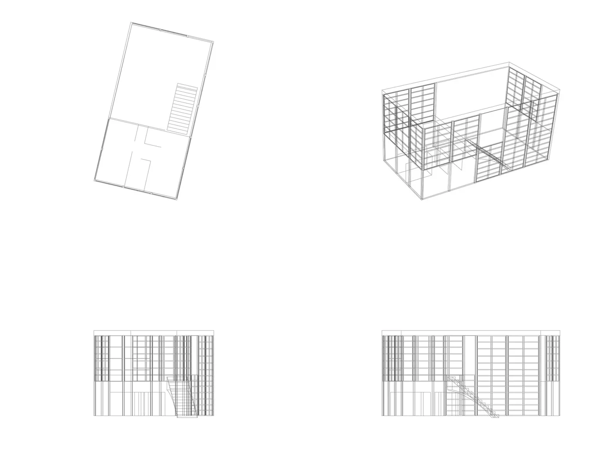

1/8 · ExteriorPhoto: Kyle · CC BY 2.0 · source
1/8 · ExteriorPhoto: Kyle · CC BY 2.0 · source 2/8 · ExteriorPhoto: Kyle · CC BY 2.0 · source
2/8 · ExteriorPhoto: Kyle · CC BY 2.0 · source
3/8 · ExteriorPhoto: edward stojakovic · CC BY 2.0 · source
4/8 · ExteriorPhoto: Kyle · CC BY 2.0 · source
5/8 · DetailPhoto: edward stojakovic · CC BY 2.0 · source
6/8 · ContextPhoto: Kyle · CC BY 2.0 · source7/8 · Drawing · wireframe de isometricas Casa EamesPhoto: Canela.colores · CC BY-SA 3.0 · source
8/8 · Drawing · Taller Casa EamesPhoto: Canela.colores · CC BY-SA 3.0 · sourceHouse · Modernism
Eames House
Charles and Ray Eames · Los Angeles, United States · 1949
Key featuresA Case Study House assembled from off-the-shelf industrial parts.
- Architect
- Charles and Ray Eames
- Place
- Los Angeles, United States
- Year
- 1949
- Typology
- House
- Movement
- Modernism
- Region
- Americas
See it on the wall


_(49842597642).jpg){kind=link}
_(49841752358).jpg){kind=link}
.jpg){kind=link}
_(49842292831).jpg){kind=link}
.jpg){kind=link}
_(49842290206).jpg){kind=link}